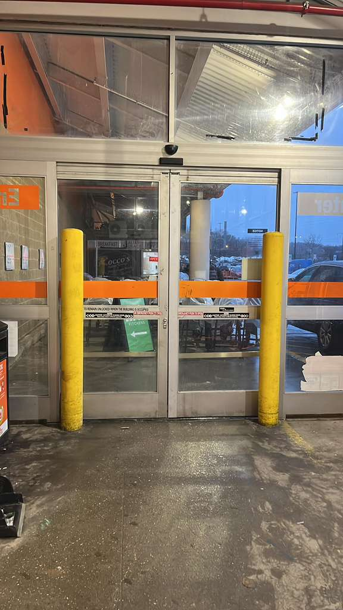
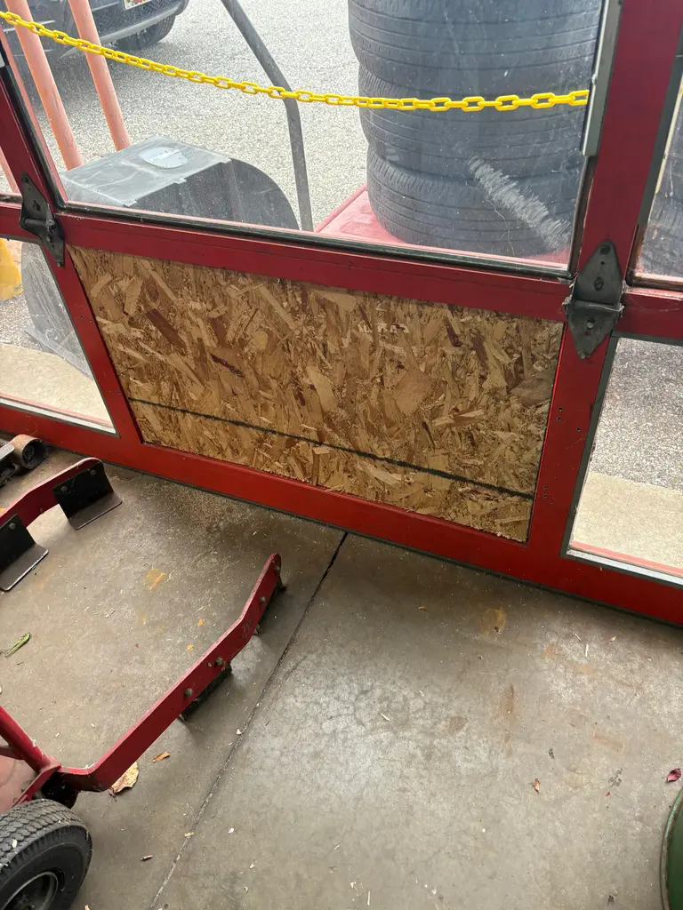
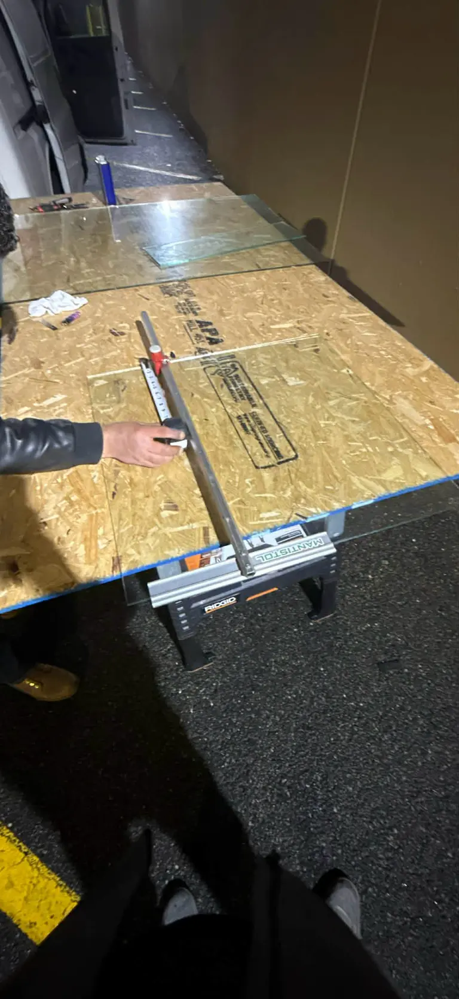
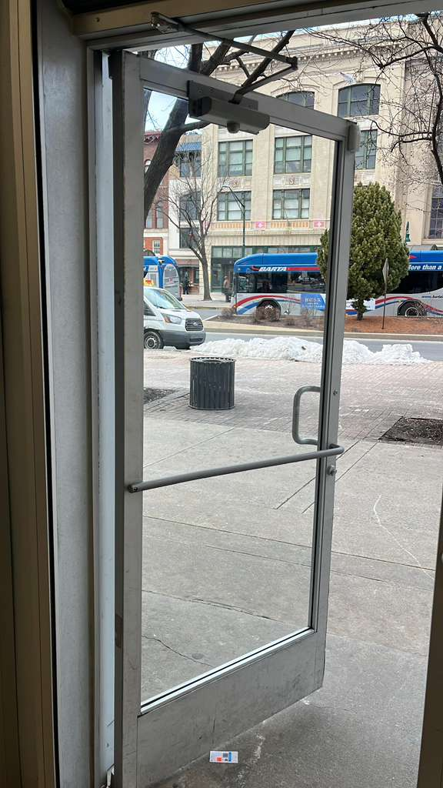

Emergency Board-Up Services
Broken glass or an unsecured opening? We secure the site, reduce risk, and coordinate replacement so the opening can return to service.
Emergency board-up service →Broken storefront, entry-door, or window glass? Call for emergency glass repair, secure-up, and board-up service across Washington DC, Maryland, and Northern Virginia.
Broken glass? Call now for 24/7 response. Emergency glass repair, board-up, and storefront secure-up across DC, MD, and Northern Virginia.
A shattered storefront pane or broken entry-door lite can leave a business exposed. Call Capital Glass Door so the opening can be assessed, secured when needed, and measured for permanent replacement. Start with emergency glass repair in Washington DC, emergency board-up, or a service below.
Broken glass or an unsecured opening? We secure the site, reduce risk, and coordinate replacement so the opening can return to service.
Emergency board-up service →Tempered and laminated storefront glass replacement, emergency board-up, and scheduled upgrades for retail and restaurants.
Storefront glass services →Closer adjustments, panic hardware, hinges, pivots, and commercial aluminum glass doors—assessed for safe, reliable operation.
Glass door repair →Residential and commercial locksmith service for lockouts, lock changes, rekeys, and door lock repairs—available 24/7 for urgent situations.
Locksmith services →A single overview page for property managers who need a reliable, repeatable process across multiple locations.
Commercial glass repair →Professional glass door installation for commercial storefronts, office entrances, and retail spaces. New installations and full door system replacements.
Glass door installation →Need emergency glass repair or door service right now? Call 703-244-0559 for 24/7 response.
An unsecured opening may need temporary protection before permanent glass is available. Call about emergency board-up and emergency glass repair across Washington DC, Maryland, and Northern Virginia, followed by assessment, measurement, and replacement planning.




Call now for emergency glass repair: 703-244-0559. You can also review Emergency Glass Repair details.
Cracked or shattered storefront glass can affect security, visibility, and customer access. Call about storefront glass repair, temporary protection, glass selection, measurements, and replacement planning across Washington DC and the DMV.


Need 24/7 storefront glass service? Call 703-244-0559 or review our Storefront Glass Repair page.
Commercial glass work extends beyond a single storefront pane. Capital Glass Door handles retail and restaurant frontage, office windows, entry-door glass, insulated units, and applicable interior glass for managed properties. Emergency and scheduled scopes are discussed by phone so access, approval, glass type, and tenant needs can be organized.
Storefront panes, entry-door glass, sidelites, transoms, and secure-up for customer-facing openings.
Commercial windows, failed insulated units, office glass, access planning, and property-manager coordination.
Unsecured openings are assessed for temporary protection; planned replacements are coordinated around site access and material needs.
Call 703-244-0559 or review commercial glass repair in Washington DC.
From emergency door repairs to complete glass door installations, we service commercial and residential door systems across Washington DC and the DMV. Our technicians handle door closers, panic hardware, hinges, pivots, and aluminum glass door systems based on the entrance condition, use, and hardware fit.
Door closer adjustments, panic bar repairs, hinge replacement, and complete door system troubleshooting for commercial properties.
Door repair services →New glass door installations for storefronts, office lobbies, and commercial entrances. Full-frame and retrofit options available.
Glass door installation →Closers, panic bars, pivots, hinges, and commercial lock hardware — assessed for repair or replacement based on the entrance and problem.
Door hardware →


Door not closing or not secure? Call 703-244-0559 to discuss commercial door repair.
Glass type depends on where the opening is located, how people use it, the existing frame, and any applicable project requirements. Call so the opening can be assessed and tempered or laminated options can be discussed where appropriate.
Often considered for door lites, sidelites, shower doors, and other impact-prone openings.
Tempered glass replacement →A bonded glass option that can help the panel remain together after breakage.
Safety compliance →Tempered glass thickness, hinge load, and clean installs for safe residential shower doors.
Shower doors →Call 703-244-0559 and share the location, opening type, damage, and access details.
We confirm glass type, measurements, hardware needs, and site access. You receive a clear scope and estimate.
If needed, we board-up and secure your property to reduce risk while replacement materials are sourced.
We install the replacement, review fit and operation where applicable, and clean the immediate work area.
When glass breaks or a door fails, the first call should establish the problem, location, access conditions, and next step. Capital Glass Door uses that call to coordinate emergency or scheduled glass and door service across the Washington DC metro area.
Emergency calls are accepted 24/7. Dispatch timing is confirmed by phone based on location, access, and current availability.
We support both commercial and residential customers—storefronts, building entrances, home glass, shower doors, and locksmith work throughout the DMV metro area.
We keep scopes simple and clear so approvals are easier for businesses, property managers, and managed properties.
Service starts by phone. Describe the emergency glass, board-up, storefront, or commercial door problem and the property location so availability and next steps can be discussed.
Capital Glass Door supports retail storefronts, restaurants, offices, apartment buildings, and shopping centers with call-first dispatch, clear scopes, and coordinated repair work.
Broken storefront glass assessment, emergency board-up when needed, and coordination for permanent glass replacement.
Storefront glass repair Washington DC →Commercial door repair DC, glass door repair, and hardware service for hinges, closers, and panic devices.
Commercial door repair DC →Scope-first communication, tenant coordination, and documented work orders across multi-site portfolios.
Commercial glass repair Washington DC →Residential window glass, patio door glass, and shower door service with safe cleanup and clear scheduling.
Residential glass repair DMV →Capital Glass Door serves Washington DC and existing coverage areas in Maryland and Northern Virginia. Use the city pages below for local property, access, and service-boundary details, or call to confirm coverage for a specific address.
We serve businesses and homeowners across Washington, DC, Arlington, VA, Alexandria, VA, Bethesda, MD, Silver Spring, MD, Rockville, MD, and the entire DMV area. See details on our Service Areas page.
Explore local pages for emergency glass repair, storefront glass repair, commercial glass repair, board-up service, and glass door repair in key DMV markets.
24/7 emergency glass repair and storefront secure-up across DC neighborhoods.
Emergency glass repair in Washington DC →Commercial glass and storefront service for Northern Virginia retail and office corridors.
Storefront glass repair in Arlington VA →Board-up and commercial glass service for Bethesda, Silver Spring, and Rockville.
Commercial glass repair in Silver Spring MD →Secondary scheduled services include shower door repair and replacement, residential window glass, patio-door glass, and insulated-glass units for homeowners across the DMV service area.
Frameless and semi-frameless shower door adjustments, hinge replacement, and seal assessment.
Full shower enclosure replacement including sliding doors, pivot doors, and custom frameless installations for homes in DC, MD & VA.
Residential window glass repair and replacement — single-pane, double-pane, and specialty glass for homes across the DMV area.
Need residential glass service or shower door help? Call 703-244-0559 to discuss the opening and next steps. We serve homeowners across Washington, DC, Maryland, and Northern Virginia.
Practical guidance for property managers and homeowners. These articles focus on safety, emergency readiness, and long-term glass performance.
A practical emergency checklist for businesses after storefront glass damage.
Read the guide →When to secure the opening now and how to plan final replacement.
Read the guide →How to decide between short-term repair and full replacement.
Read the guide →Portfolio-level workflows to reduce downtime and approvals friction.
Read the guide →Yes — Capital Glass Door provides 24/7 emergency glass repair across Washington DC, Arlington, Alexandria, Maryland, and the entire DMV area. Call 703-244-0559 to describe the damage and discuss the next step.
We prioritize unsecured openings and urgent safety risks. Dispatch timing depends on location, traffic, access, and current call volume. Call 703-244-0559 with the service address and details about the opening.
We handle storefront glass repair including tempered glass replacement, laminated glass, sidelites, transoms, and storefront system repairs for retail stores, restaurants, and commercial buildings.
Yes — we repair commercial doors including aluminum glass doors, door closers, panic hardware, hinges, pivots, and complete entrance systems across Washington DC and the DMV. See our door repair page.
We serve Washington DC, Arlington VA, Alexandria VA, Fairfax VA, Bethesda MD, Silver Spring MD, Rockville MD, and the entire DMV metropolitan area for glass repair, door repair, and emergency services. See Service Areas.
24/7 emergency glass repair, storefront glass service, commercial door repair, and glass door installation for businesses across Washington DC & DMV.
Call 703-244-0559